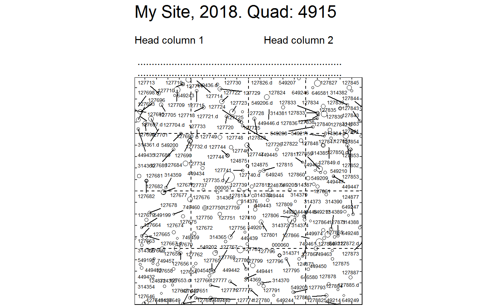
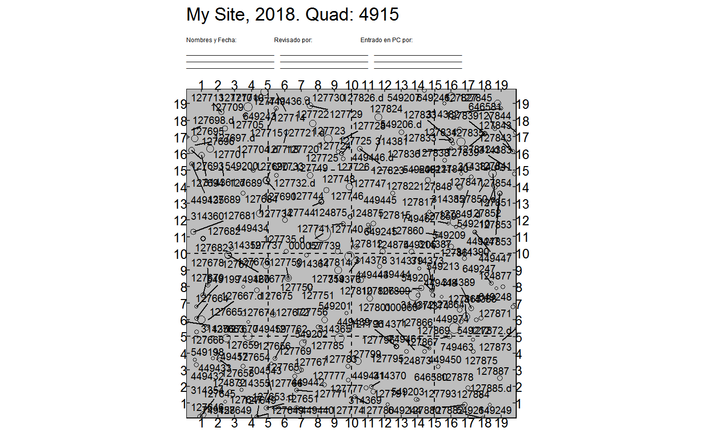
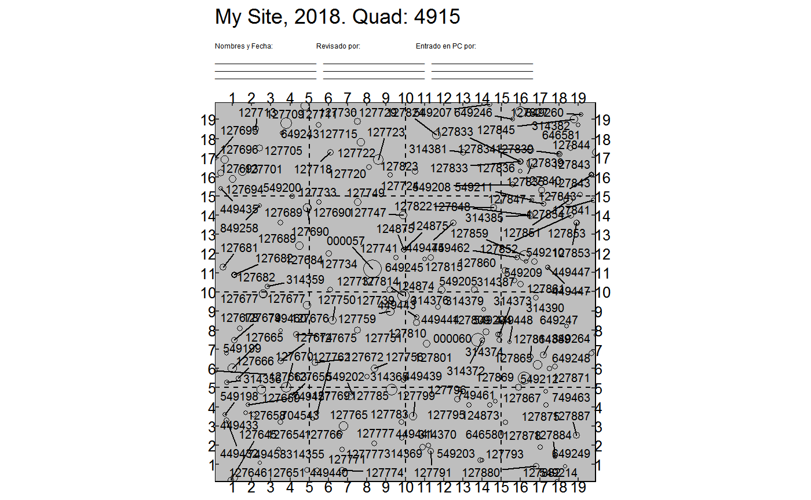

Map trees within a quadrat.
map_quad(vft, title_quad = "Site Name, YYYY, Quadrat:", header = map_quad_header(), theme = theme_map_quad(), lim_min = 0, lim_max = 20, subquadrat_side = 5, tag_size = 2, extend_grid = 0)
| vft | A dataframe -- specifically, a ForestGEO ViewFullTable. |
|---|---|
| title_quad | A string to use as a title. |
| header | A string to use as a header (see [headers]). |
| theme | An object of class theme. |
| lim_min, lim_max | Minimum and maximum limits of the plot area. |
| subquadrat_side | Length in meters of the side of a subquadrat. |
| tag_size | A number giving tag size. Passed to [ggrepel::geom_text_repel]. |
| extend_grid | A number to adjust the extension of the grid lines beyond the plot limits. |
A list which each element is a plot of class ggplot.
library(dplyr) library(fgeo.utils) # Fixing wrong names vft <- rename(bciex::bci12vft_mini, QX = x, QY = y) # Filter the data you want. For example: # Filtering trees of diameter greater than 10 cm from the last census of plot 1 # (see also ?fgeo.utils::rm_dead_twice) want <- dplyr::filter( vft, DBH > 10, PlotCensusNumber == max(PlotCensusNumber, na.rm = TRUE), PlotID == 1 ) # Filtering only two quadrats to save time two_quadrats <- top(want, QuadratID, 2) p <- map_quad(two_quadrats)#>#> Warning: No stem is dead. Is that what you expect?#># Printing all plots pf `p` to .pdf, with parameters optimized for size letter tmp <- tempfile() # Remplace this by somehtihing like "maps.pdf" pdf(tmp, paper = "letter", height = 10.5, width = 8) p#> $`4915`#> #> $`4916`#>dev.off()#> RStudioGD #> 2# Customizing the maps ---------------------------------------------------- # Filtering only one quadrat to save time one_quad <- top(want, QuadratID) # A custom title and header myheader <- paste( " ", "Head column 1 Head column 2 ", " ", " ........................................................................", " ........................................................................", sep = "\n" ) map_quad(one_quad, title_quad = "My Site, 2018. Quad:", header = myheader)#>#> Warning: No stem is dead. Is that what you expect?#>#> $`4915`#># Many more tweaks are possible # Use functions from ggplot to tweak theme library(ggplot2) map_quad( one_quad, title_quad = "My Site, 2018. Quad:", header = map_quad_header("spanish"), tag_size = 3, theme = theme_map_quad( axis.text = NULL, # NULL shows axis.text; element_blank() doesn't. plot.title = element_text(size = 15), plot.subtitle = element_text(size = 5), panel.background = element_rect(fill = "grey") ) )#>#> Warning: No stem is dead. Is that what you expect?#>#> $`4915`#>